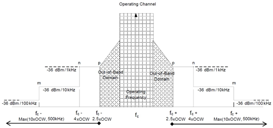
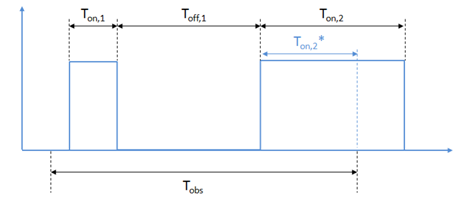
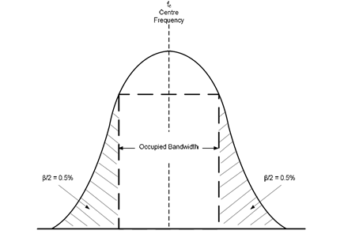
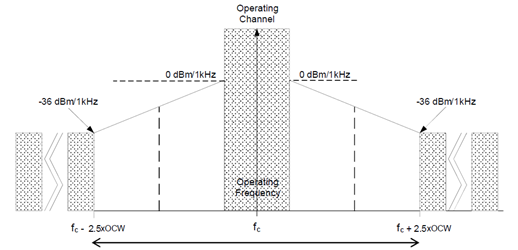
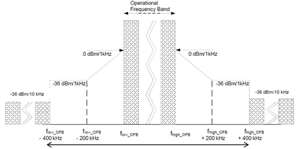
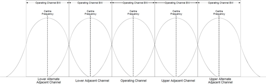
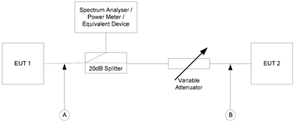
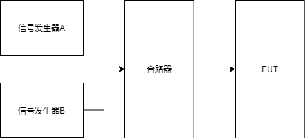
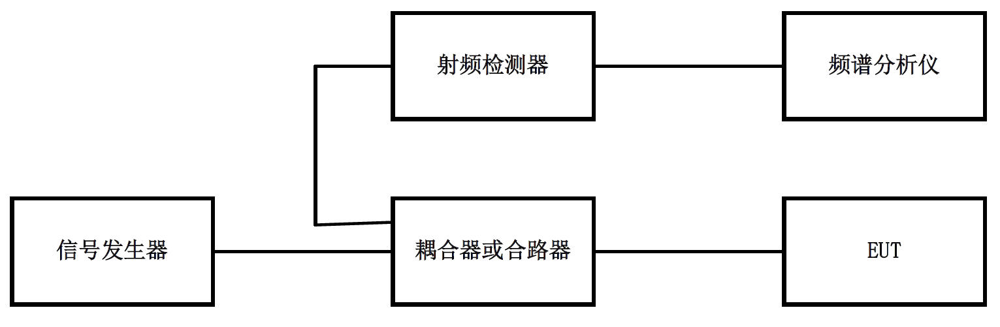

lora射频测试_CE
测试条件
接收机类别
短距离无线电设备的产品系列根据接收机类别进行划分，见下表，每个类别都有一组相关的接收机要求和最低性能标准。
接收机类别的选择应特别注意来自运行在相同或相邻频段的其他系统的干扰风险，特别是在短距离无线电设备的运行可能对人类生命安全具有内在安全影响的情况下。 如果风险评估表明设备可能无法按照预期用途运行，则应向用户提供信息。
| 接收机类别 | 描述 |
|---|---|
| 1 | 类别 1 是高性能级别的接收机。特别是在短距离无线电设备的运行可能对人类生命安 全具有内在安全影响的情况下使用。 |
| 1.5 | 类别 1.5 是类别 2 接收机性能水平的改进。 |
| 2 | 第 2 类是接收机的标准性能水平。 |
| 3 | 第 3 类是一种性能较低的接收机。制造商必须意识到，如果与相邻频段的移动无线电 服务等某些服务共存时，第 3 类接收机将无法正常工作。制造商应提供另一种方法来克服无线电链路的弱点或接受故障。 |
注意：第 3 类接收机已于在 2018 年 12 月 31 日之后撤回。LoRa 设备接收机属于第 2 或者 1.5 类接收机。
测试信号
就本文件而言，测试信号是由 EUT 生成的调制或未调制载波，以方便特定测试。 EUT 应该能够产生以下测试信号：
DM-1：由未调制载波组成的测试信号，即单载波信号。此测试信号是可选的，但有助于简化一些测试 。
DM-2：由代表正常工作的调制载波组成的测试信号，该信号应持续不断，duty cycle 为 100%的调制波形， 即持续发射信号，并产生最大占用的 RF 带宽。
DM-2a：D-M2 中描述的测试信号，但间歇性产生。每次传输产生的 RF 信号应相同，按时间规律出现，可准确重复，其定时持续时间应代表 EUT 的正常工作的状态，但必须符合占空比限制。
DM-3：代表 EUT 正常运行的测试信号。
测试模式下的操作可能涉及对被测设备进行适当的临时内部修改或使用特殊软件。所用方法的详细信息应由制造商声明并记录在测试报告中。
对于每次执行的测试，所使用的测试信号应记录在测试报告中。每项测试的推荐测试信号如下表
| 测试项目 | 测试信号 |
|---|---|
| Effective Radiated Power | D-M1, D-M2, D-M2a, D-M3 |
| Maximum Effective Radiated Power spectral density | D-M3 |
| Duty Cycle | D-M3 |
| Duty Cycle Template | D-M3 |
| Occupied Bandwidth | D-M2, D-M2a, D-M3 |
| Frequency error | D-M1, D-M2, D-M2a, D-M3 |
| Tx Out Of Band Emissions | D-M2, D-M2a, D-M3 |
| Unwanted emissions in the spurious domain | D-M1, D-M2, D-M2a, D-M3 |
| Transient power | D-M3 |
| Adjacent Channel Power | D-M2, D-M2a, D-M3 |
| TX behaviour under Low Voltage Conditions | D-M1, D-M2, D-M2a, D-M3 |
| Adaptive Power Control | D-M3 |
| RX sensitivity level | D-M3 |
| Adjacent channel selectivity | D-M3 |
| Receiver saturation at Adjacent Channel | D-M3 |
| Spurious response rejection | D-M3 |
| Blocking | D-M3 |
| Behaviour at high wanted signal level | D-M3 |
| Polite spectrum access | D-M3 |
正常测试条件
正常温度和湿度
试验的正常温度和湿度条件应为下列范围内的任何温度和湿度的方便组合：
温度 +15 °C 至 +35 °C；
相对湿度 20 % 至 75 %。
当在这些条件下进行试验不可行时，应在试验报告中添加对这种影响的注释，说明试验期间的环境温度和相对湿度。
正常测试电源
- 市电电压
连接到市电的设备的正常试验电压应为标称市电电压。 就本文件而言，标称电压应为设备设计时所声明的电压或任何其他声明的电压。对应于交流电源的测试电源的频率应在 49 Hz 和 51 Hz 之间。
- 稳压铅酸蓄电池电源
当无线电设备打算使用铅酸电池电源运行时，正常测试电压应为 1.1 乘以电池的标称电压（例如 6 V、12 V 等）。
- 其他电源
对于使用其他电源或电池类型（初级或次级）的操作，正常测试电压应为设备制造商声明并经认可的测试实验室同意的电压。 这些值应在测试报告中说明。
极限测试条件
除非另有说明，在极端测试条件下进行的测试应同时应用最坏情况下的温度和电压条件。
极限温度
极端温度下的测试应在制造商声明的上限和下限温度下进行。测试报告应说明所使用的范围。
极限测试电源电压
- 市电电压
连接到交流电源的设备的极限测试电压应为标称电源电压±10%。
- 稳压铅酸蓄电池电源
当无线电设备打算使用常规类型的调节铅酸电池电源运行时，极限测试电压应为 1.3 和 0.9 乘以电池的标称电压（6 V、12 V 等），对于使用“凝胶电池”型电池的浮充电应用，极限电压应为 1.15 和 0.85 乘以声明的电池电压的标称电压。
- 使用其他类型电池的电源
使用电池供电的设备的最低极限试验电压如下： 对于碳锌或锂电池：0.85 乘以电池的标称电压； 对于镍镉电池：0.9 乘以电池的标称电压；
对于其他类型的电池或设备，放电条件下极限试验电压应为由设备制造商声明。
- 其他电源
对于使用其他电源或能够使用多种电源工作的设备，极限试验电压应为设备制造商和试验实验室商定的电压。这应记录在测试报告中。
频率捷变或跳频设备的测试
测试应在最高工作信道和最低工作信道上进行。 在适当的情况下，还应在测试实验室和制造商之间同意的一个或多个中频上进行测试。
对于跳频扩频设备，应在上述条件下进行两种不同的测试：
停止跳频序列，并如上所述在两个不同的信道上测试设备，即还需要实现定频功能，以便测试。
跳频序列功能正常，设备使用制造商声明的所有跳频信道进行测试。
没有外部射频连接器的设备
对于带有集成天线或带有非传统 50Ω 同轴电缆的天线连接的设备连接器，可以通过以下方式在此类设备上进行传导测量：
访问内部连接器；
安装临时连接器；
使用测试夹具。
对于带有内部连接器的设备，当 EUT 在天线和电路之间有一个内部常规 50 Ω 同轴连接器时，这可用于执行传导测量。 接入连接器的方法应借助图表加以说明。 使用内部天线连接来促进测量的事实应记录在测试报告中。
对于带有临时天线连接器的设备，可以测试一组连接正常天线的设备，以进行辐射测量。 制造商应在辐射测量结束时前往测试实验室，断开天线并安装临时连接器。 测试实验室工作人员不得连接或断开任何临时天线连接器。或者，可以将两套设备提交给测试实验室，一套装有临时天线连接器，天线断开，另一套设备连接天线。 每个设备都应用于适当的测试。 应声明两套设备除天线连接器外的所有方面都相同。
传导和辐射测量
本文件中的测量方法允许进行传导测量，但应注意设备及其所有预期天线组件应符合适用的技术要求。在使用传导连接给出测试方法的情况下，可以使用等效辐射测量来代替。 对于某些测量，可以使用测试夹具进行等效测试。当测量方法规定了辐射测量时，一般不能用传导或试验夹具测量来代替。
有关辐射测试场地的指南，请参见 ETSI EN300 220-1 附录 C。辐射测量布置的详细说明包含在附录中。下表 给出了关于可以使用传导或测试夹具连接执行哪些测量的指导。
| 描述 | 通过 EUT 上的 连接器传导 | 测试夹具 | 辐射 |
|---|---|---|---|
| Operating Frequency | 是 | 是 | 是 |
| Effective Radiated Power | 是 | 仅用于极限温度测试 | 是 |
| Maximum e.r.p spectral density | 是 | 仅用于极限温度测试 | 是 |
| Maximum Occupied Bandwidth | 是 | 是 | 是 |
| Transmitter Frequency Error | 是 | 是 | 否 |
| Tx Out Of Band Emissions | 是 | 仅用于极限温度测试 | 是 |
| Unwanted Emissions in the Spurious Domain | 是 | 否 | 是 |
| Transient Power | 是 | 否 | 是 |
| Adjacent Channel Power | 是 | 仅用于极限温度测试 | 是 |
| Tx behaviour under Low Voltage Conditions | 是 | 是 | 是 |
| Adaptive Power Control | 是 | 否 | 是 |
| RX sensitivity | 是 | 否 | 是 |
| Adjacent Channel Selectivity | 是 | 否 | 是 |
| Blocking | 是 | 否 | 是 |
| Receiver saturation | 是 | 否 | 是 |
| Spurious response rejection | 是 | 否 | 是 |
| Behaviour at high wanted signal level | 是 | 否 | 否 |
| Rx Spurious Radiation | 是 | 否 | 是 |
| CCA threshold | 是 | 否 | 是 |
如果 EUT 有多个天线端口，例如 Tx 和 Rx 的分离天线或不同工作频率的分离天线或分集天线，则:
如果每个天线端口都有一个传统的 50 欧姆连接器，则可以按照表 3 进行传导测量，所有天线端口都应以 50 欧姆连接。
否则，只能进行辐射测量。所有天线端口都应该安装一个正常使用的天线。原因是，用传输线替换一个天线可能会影响其他任何天线的运行。
测量接收机
测量接收机是选频电压表或频谱分析仪。除非另有说明，否则应使用 RMS 检波器。 通常，测量接收机的分辨率带宽（RBW）应等于参考带宽（RBWREF）
| 频率范围：（f） | 测量接收机分辨率带宽（RBWREF） |
|---|---|
| f < 150 kHz | 200 Hz 或 300 Hz |
| 150 kHz ≤ f < 25 MHz | 9 kHz 或 10 kHz |
| 25MHz≤ f <1000MHz | 100 kHz 或 120 kHz |
| f > 1 000 MHz | 1 MHz |
技术规格
设备技术规格和运行的环境规范，应由制造商声明。
LoRa 设备的工作频段
LoRa 网关和终端在欧盟区域工作在 863~870MHz ISM 频段，符合 ETSI EN300.220-2 标准定义的无线电频谱使用区域，支持频段如表 5 所示。
| 代号 | 工作频段 | 有效辐射功率限制 (e.r.p） | 信道访问和占用规则（如 Duty Cycle、LBT+AFA） | 最大占用 带宽 | 2013/752/EU的频段编号 |
|---|---|---|---|---|---|
| K | 863-865MHz | 25mW(14dBm) | DC<0.1%或者礼让频谱访问 | 整个频段 | 46a |
| L① | 865-868MHZ | 25mW(14dBm) PSD 限值: 6.2dBm/100kHz | DC<1%或者礼让频谱访问 | 整个频段 | 47 |
| M | 868-868.6MHz | 25mW(14dBm) | DC<1%或者礼让频谱访问 | 整个频段 | 48 |
| N | 868.7-869.2MHz | 25mW(14dBm) | DC<0.1%或者礼让频谱访问 | 整个频段 | 50 |
| P | 869.4-869.65MHz | 500mW(27dBm) | DC<10%或者礼让频谱访问 | 整个频段 | 54b |
| R | 869.7-870MHz | 25mW(14dBm) | DC<1%或者礼让频谱访问 | 整个频段 | 56b |
注①
以上规定是参照 ETSI EN 300 220-2 V3.1.1 标准，最新标准 ETSI EN 300 220-2 V3.2.1 对使用频段 L 的设备进行分类不同类型产品技术要求有所不同，同时不再对 PSD 进行限制，如表 6 所示。
2017/1483/EU 频段编号 频段 SRD 设备类别 有效辐射功率限制 使用限制 信道访问和占用规则DC<1%或者礼让频谱访问 实施日 期 47 865-868 MHz 非特定的 SRDs 25 mW - 2014/1/1 47a 865-868 MHz 射频识别设备（RFID 设备） 2 W 仅允许在以 865.7 MHz、866.3 MHz、866.9 MHz和 867.5 MHz 为中心的四个信道内；最大带宽为 200 kHz 礼让频谱访问 2018/1/1 47b 865-868 MHz 非特定的 SRDs 500 mW 仅允许在 865.6- 865.8 MHz、866.2- 866.4 MHz、866.8- 867.0 MHz 和 867.4-867.6 MHz 频段内传输。需要自适应功率控制 (APC)。或者，具有至少同等水平的频谱兼容性的其他缓 解技术。 礼让频谱访问占 用 带 宽 ≤200kHz，对于网络接入点 DC≤10% ，对于其 他 的 DC≤2.5% 2018/1/1
对于 LoRa 产品认证目前是使用 ETSI EN 300 220-2 V3.1.1 标准。后续可以考虑使用 47b 频段以提高产品的发射功率
LoRa 设备调制方式和速率
LoRaWAN® EU863-870 支持 LoRa 和 FSK 两种调制方式，125kHz 和 250kHz 两种带宽。支持速率 DR0~DR7， 具体配置如表 7 所示
| 速率 DR | 配置 | 比特率（bit/s） |
|---|---|---|
| 0 | LoRa: SF12 / 125 kHz | 250 |
| 1 | LoRa: SF11 / 125 kHz | 440 |
| 2 | LoRa: SF10 / 125 kHz | 980 |
| 3 | LoRa: SF9 / 125 kHz | 1760 |
| 4 | LoRa: SF8 / 125 kHz | 3125 |
| 5 | LoRa: SF7 / 125 kHz | 5470 |
| 6 | LoRa: SF7 / 250 kHz | 11000 |
| 7 | FSK: 50 kbps | 50000 |
注意：
LoRaWAN®协议要求至少支持 DR0~DR5。对于 CE 合规认证因为考虑到有可能设备工作于非 LoRa 协议下和
P2P 模式下，所以建议按表 8 的速率配置 DR0~DR7 进行认证，
随着 LoRaWAN®协议的更新，支持的调制方式、扩频技术、速率、带宽等可能会增加或还改变。最新的RP002-1.0.3 LoRaWAN®区域参数增加了对跳频扩频技术的的支持，速率相应所示增加了 DR8~DR11 的 4 种配置。
测量要求
| 编号 | 描述 | 参考编 号 | 条件 | 无 LBT 功能 | 有 LBT 功能 |
|---|---|---|---|---|---|
| 1 | Operating frequency | 4.2.1 | 适用 | 适用 | |
| 2 | Unwanted emissions in the spurious domain | 4.2.2 | 适用 | 适用 | |
| 3 | TX effective radiated power | 4.3.1 | 适用 | 适用 | |
| 4 | TX Maximum e.r.p spectral density | 4.3.2 | 适用于使用频段 I、L 的 EUT。适用于使用 DSSS 或除 FHSS 调制以外的宽带技术使用频段 X 的 EUT。 | 仅适用频段 L | 仅适用频段 L |
| 5 | TX Duty cycle | 4.3.3 | 不适用于具有礼让频谱访问的 EUT。 | 适用 | 不适用 |
| 6 | TX Occupied bandwidth | 4.3.4 | 适用 | 适用 | |
| 7 | TX out of band emissions | 4.3.5 | 适用于 OCW > 25 kHz 的 EUT。 | 适用 | 适用 |
| 8 | TX Transient | 4.3.6 | 适用 | 适用 | |
| 9 | TX Adjacent channel power | 4.3.7 | 适用于 OCW<=25 kHz 的 EUT。 | 不适用 | 不适用 |
| 10 | TX behaviour under low voltage conditions | 4.3.8 | 适用于电池供电的 EUT。 | 仅适用电池供电设备 | 仅适用电池 供电设备 |
| 11 | TX Adaptive power control | 4.3.9 | 适用于使用频段 AA 进行自适应功率控制的 EUT。 | 不适用 | 不适用 |
| 12 | TX FHSS | 4.3.10 | 适用于使用跳频扩频技术的 EUT | 不适用 | 不适用 |
| 13 | TX Short term behaviour | 4.3.11 | 适用于使用频段 Y、Z、AA、AB、AC、AD 的 EUT。 | 不适用 | 不适用 |
| 14 | RX sensitivity | 4.4.1 | 适用于具有礼让频谱访问的 EUT。 | 不适用 | 适用 |
| 15 | Clear channel assessment threshold | 4.5.2 | 适用于具有礼让频谱访问的 EUT。 | 不适用 | 适用 |
| 16 | Polite spectrum access timing parameters | 4.5.3 | 适用于具有礼让频谱访问的 EUT。 | 不适用 | 适用 |
| 17 | RX Blocking | 4.4.2 | 适用 | 适用 | |
| 18 | Adaptive Frequency Agility | 4.5.4 | 适用于具有频率自适应的 EUT。 | 不适用 | 不适用 |
测试规范
Operating frequency
EUT 的工作频段、标称工作信道和工作信道带宽（OCW）均需由制造商声明。标称工作信道是指信道占用带宽（OCW）的中心。
LoRa 设备的工作频段和工作信道带宽如表 5 所示，工作信道带宽如表 7 所示，工作信道可以由网络运营商在工作频段范围内自由定义。但是，表 9 中三个默认信道在 EU863-870 终端设备上必须支持。
| 调制方式 | 带宽/kHz | 信道频率/MHz | 速率 | 信道数量 | 占空比 |
|---|---|---|---|---|---|
| LoRa | 125 | 868.1 868.3 868.5 | DR0~DR5 | 3 | < 1% |
固定标称信道只有以上三个信道，其他信道可以根据实际使用情况配置，且 LoRaWAN®设备最多同时支持16 个信道。考虑到设备有可能工作于非 LoRaWAN®协议下和 P2P 模式下，推荐信道列表如下。
| 频段 | LoRa/125kHz | LoRa/250kHz | FSK/50kbps |
|---|---|---|---|
| K | 863.1/863.3/863.5/863.7/863.9 864.1/864.3/864.5/864.7/864.9 | 863.2/863.6/864/864.4 864.8 | 863.1/863.3/863.5/863.7/863.9 864.1/864.3/864.5/864.7/864.9 |
| L | 865.1/865.3/865.5/865.7/865.9 866.1/866.3/866.5/866.7/866.9 867.1/867.3/867.5/867.7/867.9 | 865.2/865.6/866/866.4 866.8/867.2/867.6 | 865.1/865.3/865.5/865.7/865.9 866.1/866.3/866.5/866.7/866.9 867.1/867.3/867.5/867.7/867.9 |
| M | 868.1/868.3/868.5 | 868.3 | 868.1/868.3/868.5 |
| N | 868.8/869.1 | 868.9 | 868.8/869.1 |
| P | 869.525 | 869.525 | 869.525 |
| R | 869.85 | 869.85 | 869.85 |
Unwanted emissions in the spurious domain
测量限值
杂散域中的无用发射是指杂散域中除工作信道及其带外域之外的频率上的无用发射，测量分为发射模式、接收和其他模式，不同的测量模式对杂散限值要求不同，下表 所示杂散域发射限值。
| 频率 | 47MHz-74MHz 87.5MHz-118MHz 174MHz-230MHz 470MHz-790MHz |
低于 1000MHz 以下的其他频率 | 1000MHz 以上的频率 | ||||
|---|---|---|---|---|---|---|---|
| 发射模式限值 | -54dBm | -36dBm | -30dBm | ||||
| 接收模式和其他模式限值 | -57dBm | -57dBm | -47dBm |
测量方法
发射模式测量方法：
- 对没有外部天线连接器的 EUT（板载天线或者集成天线等），杂散发射按辐射法测量。对于其他（有天线连接器）的 EUT，杂散发射应按传导法测量和辐射法测量。
- 发射机应在制造商声明的最低和最高工作频率下运行。可以增加测试其他频率。
- 测量应在 EUT 以制造商声明的最大工作功率水平运行时进行，并且 EUT 应处于通电待机模式。
- 测量仪器的 RBW 设置见下表。
| 测量频率范围 | RBWREF |
|---|---|
| 9kHz≤f<150kHz | 1kHz |
| 150kHz≤f<30MHz | 10kHz |
| 30MHz≤f < fc-m | 100kHz |
| fc-m≤f < fc-n | 10kHz |
| fc-n≤f < fc-p | 1kHz |
| fc +p<f≤fc +n | 1kHz |
| fc +n< f≤fc +m | 10kHz |
| fc +m<f≤1GHz | 100kHz |
| 1GHz<f≤6 GHz | 1MHz |
注：f 为测量频率 fc 为工作频率 m 为 10×OCW 和 500kHz 的较大者，LoRa 设备 OCW 为 125kHz 和 250kHz 两种，10×OCW>500kHz， 取前者。 n 为 4×OCW 和 100kHz 的较大者，LoRa 设备 OCW 为 125kHz 和 250kHz 两种，4×OCW>100kHz，取前者。 p 为 2.5×OCW
- 杂散域中无用发射的频谱模板和 RBW 如下图 所示。

接收模式和其他模式测量方法：
EUT 应在正常运行的模式运行。
对没有外部天线连接器的 EUT（板载天线或者集成天线等），杂散发射按辐射法测量。对于其他（有天线连接器）的 EUT，杂散发射应按传导法测量和辐射法测量。
传导和辐射测量要求：
传导法测量 EUT 的天线端口连接到假负载（如陷波器等），假负载的输出连接到测量接收机。辐射测量法 EUT 应连接到其正常工作的天线，测试天线的输出应连接到测量接收机，辐射测试场地根据 ETSI EN300 220-1 条款 C.1 中选择合适的测试场地，开阔试验场(OATS)、半电波暗室(SAR)或者全电波暗室(FAR)。测试方法参考 ETSI EN300 220-1 条款 C.5，注意的是辐射法需要测量垂直和水平极化两个方向的杂散分量。
杂散测量的频率范围如下表所示。
| 测量方法 | 测量频率范围 |
|---|---|
| 传导测量法 | 9kHz-6GHz |
| 辐射测量法 | 25MHz-6GHz |
Effective Radiated Power
无线电发射机供给天线的功率和在给定方向上该天线相对于半波偶极振子的增益的乘积。实际上用有效发射功率 ERP 代替 EIRP 来表示同半波耦极子天线相比的最大发射功率。注：耦极子天线具有 1.64 的增益（2.15dB），因此，ERP 比 EIRP 低 2.15dB，即 ERP=EIRP-2.15dB。
测量限值
对于选定的工作频段，有效辐射功率不得大于表 5 中允许的值。
测量方法
传导测试法
此方法仅适用于带有永久性外部天线连接器的 EUT。
测量应在制造商声明的最低和最高工作频率下进行。可以增加测试其他频率。
如果可以，发射机应在不调制的情况下打开，测量接收机调到被测发射机的频率。D-M1 测试信号（未调制载波）不得用于非恒定包络调制的设备。
频谱分析仪的 RBW 应足够宽以覆盖 EUT 信号的完整功率包络（≥OCW）。对于 LoRa 产品 RBW 可设置为 300kHz。
在非恒定包络调制的情况下，应使用 Peak 检波器。（LoRa 调制为恒定包络调制，使用 RMS 检波器）。
与设备一起使用的天线的最大增益应由制造商声明。
Perp 有效辐射功率（e.r.p）= Pconducted 传导功率 + G 天线增益（dBd）,天线增益（dBd）=天线增益（dBi）-2.15。
辐射测试法
此方法仅适用于不带有永久性外部天线连接器的 EUT。
- 测量应在制造商声明的最低和最高工作频率下进行。可以增加测试其他频率。
- 测量应在发射机预期运行的最高功率水平下进行。
- 如果可以，发射机应在不调制的情况下打开，测量接收机调到被测发射机的频率。D-M1 测试信号（未调制载波）不得用于非恒定包络调制的设备。
- 频谱分析仪的 RBW 应足够宽以覆盖 EUT 信号的完整功率包络（≥OCW）。对于 LoRa 产品 RBW 可设置为 300kHz。
- 在可拆卸天线的情况下，天线应为设备正常使用的安装方式。
- 对于极端温度条件下的测量，最好使用内部或临时连接器而不是测试夹具。
- 辐射测试场地根据 ETSI EN300 220-1 条款 C.1 中选择合适的测试场地，开阔试验场（OATS）、半电波暗室（SAR）或者全电波暗室（FAR）。测试方法参考 ETSI EN300 220-1 条款 C.5。
Effective Radiated Power spectral density
最大 e.r.p.谱密度定义为最高 e.r.p.发射机在功率包络内产生的每赫兹 dBm 电平。
测量限值
有效辐射功率不得大于表 5 中允许的值。对于 LoRa 设备只适用于频段 L。
测量方法
测量应在制造商声明的最低和最高工作频率下进行。可以增加测试其他频率。
如果设备设计为在不同的功率等级下运行，制造商应声明每个等级或等级范围的额定功率。 这些测量应在发射机预期运行的最高功率电平下进行。
发射机应使用表 2 中适当的测试信号调制打开，测量接收机调到被测发射机的频率。
将 EUT 连接到频谱分析仪并使用以下设置：
Centre Frequency：被测工作信道的中心频率
Span：足够宽以覆盖 EUT 发射信号的完整功率包络（≥OBW），一般设置为 2×OBW RBW：100kHz
VBW：100kHz Sweep time：1 分钟Detector：RMS
Trace Mode：Max Hold
Trace 完成后，使用峰值搜索捕获轨迹上的峰值标记点，该标记点记录为 100kHz 频带中的最高平均功率（频谱功率密度）D，或者，如果频谱分析仪配备有测量频谱功率密度的设备，则该设备可用于显示以 dBm/100 kHz 为单位的频谱功率密度 D。
根据公式 PD = D + G，最大 e.r.p 频谱密度是根据上述测量的功率密度 D 和相对于理想半波偶极子的以 dB 为单位的适用天线组件增益“G”计算得出的。如果将多个天线组件用于此功率设置，则应使用具有最高增益的天线组件的增益。
Duty Cycle
占空比是在一段监测时间内发射机在观测带宽 Fobs 上发射无线电信号的累积持续时间 Ton_cum 和监测总时间时间 Tobs 以百分比表示的百分比，

测量限值
对于不具有频谱礼让功能的 EUT，Duty cycle 不得大于表 5 中各频段允许的值。
测量方法
将 EUT 连接到频谱分析仪并使用以下设置： Centre Frequency：被测工作信道的中心频率Span：Zero
RBW：大于 OCW，LoRa 可设置为 300kHz
Sweep time：对于发射时间和发射间隔固定的 EUT，可在合适的周期内设置，对于发射时间和发射间隔不固定的 EUT 设置 1 小时，或者使用功率计测试。
Detector：RMS
Trace Mode：Max Hold
计算出 EUT 的累积发射时间 Ton_cum，sweep time 即 Tob，利用公式计算出 Duty cycle。

Occupied Bandwidth
占用带宽（OCW）是给定发射总平均功率的 99% 落在其中的频率范围。总功率的剩余部分表示为 β，在对称光谱的情况下，它在频谱的每一侧分成 β/2。 除非另有规定，否则 β/2 取 0.5%，如下图所示。最大占用带宽包括所有相关边带高于适当发射电平以及极端测试条件下的频率误差或漂移。

测量限值
工作信道占用带宽应由制造商声明，定义信道两个频率边值 Flow 和 Fhigh，所有信道的频率边值完全落在如表 5 规定的频段范围内。99%处最大占用带宽边值必须在定义的频率边值 Flow 和 Fhigh 之内。
测量方法
占用带宽亦可使用辐射测量法和传导测量法。辐射测量法：
应从 ETSI EN300 220-1 条款 C.1 中选择合适的测试场地，开阔试验场（OATS）、半电波暗室（SAR）或者全电波暗室（FAR），测试方法参考 ETSI EN300 220-1 条款 C.5。
传导测量法：
EUT 应连接到射频线，射频线应通过适当的衰减器连接到测试设备。执行以下测试步骤，
- 频谱分析仪按照下表 14 所示参数配置
| 参数 | 设置值 | 说明 |
|---|---|---|
| Centre frequency | EUT 工作频率 | 制造商声明的各频段最高或最低工作频率 |
| RBW | 占用带宽的 1%~3%， 但不低于 100Hz | LoRa 占用带宽为 125kHz 和 250kHz，所以建议 RBW 设 置为 3kHz |
| VBW | 3×RBW | LoRa 产品建议设置为 10kHz |
| Span | 至少信道带宽的 2 倍 | 125kHz 带宽 span 设置为 250kHz，250kHz 带宽 span 设 置为 500kHz |
| Detector Mode | RMS | - |
| Trace Mode | Max Hold | - |
应以制造商声明的最高工作频率和适当的测试信号测试。应调整信号衰减以确保信号功率包络充分高于分析仪的底噪，以避免功率包络任一侧的噪声信号被包含在底噪中。尽量使用最大 e.r.p 功率测试占用带宽。
应使用频谱分析仪的 99% 占用带宽功能来测量信号的占用带宽。
Tx Out of Band Emissions
带外（OOB）：频带以外
带外域：紧靠工作信道之外的频谱区域。带外发射：带外域中的发射。
工作信道（OC）: 设备传输发生的频率范围，由两个频率边缘值定义： flow 和 fhigh。
工作频段（OFB）: 表 5 中的频段，该设备将在其中一个或多个频段运行并执行设备的预期功能；由两个频率边缘值定义：flow_OFB 和 fhigh_OFB。flow_OFB 是工作频段的下边缘。fhigh_OFB 是工作频段的上边缘。
带外发射定义了两个带外域，一个用于 OC，另一个用于 OFB，这两个域的频谱有可能重叠（当 OC 在 OFB 的边缘时就会重叠）。带外域中的无用发射是那些落在紧邻工作信道的下限和上限频率以下的频率范围内的发射。带外域包括操作频带内操作信道外的频率和操作频带外的频率。适用于 OC 域如下图所示。

适用于 OFB 域如下图所示

测量限值
工作信道和工作频段的 OOB 域中的 EUT 发射电平应低于或等于频谱模板。
| 带外域 | 频率范围 | RBWREF | 最大功率限值 |
|---|---|---|---|
| 适用于 OFB 的 OOB 限值 （见图 5） | f ≤ flow_OFB - 400 kHz | 10kHz | -36dBm |
| flow_OFB - 400 kHz ≤ f ≤ flow_OFB - 200 kHz | 1kHz | -36dBm | |
| fow_OFB - 200 kHz ≤ f < flow_OFB | 1kHz | 见图 5 | |
| f = flow_OFB | 1kHz | 0dBm | |
| f = fhigh_OFB | 1kHz | 0dBm | |
| fhigh_OFB < f ≤ fhigh_OFB + 200 kHz | 1kHz | 见图 5 | |
| fhigh_OFB + 200 kHz ≤ f ≤ fhigh_OFB + 400 kHz | 1kHz | -36dBm | |
| fhigh_OFB + 400 kHz ≤ f | 10kHz | -36dBm | |
| 适用于 OFB 的 OOB 限值 （见图 4） | f = fc- 2.5 x OCW | 1kHz | -36dBm |
| fc – 2.5 x OCW ≤ f ≤ fc – 0.5 x OCW | 1kHz | 见图 4 | |
| f = fc – 0.5 x OCW | 1kHz | 0dBm | |
| f = fc + 0.5 x OCW | 1kHz | 0dBm | |
| fc + 0.5 x OCW ≤ f ≤ fc + 2.5 x OCW | 1kHz | 见图 4 | |
| f = fc+ 2.5 x OCW | 1kHz | -36dBm |
说明：
f 是测量频率。
fc 是工作频率。
flow_OFB 是操作频带的下边缘。
fhigh_OFB 是操作频带的上边缘。
OCW 是工作信道带宽。
测量方法
对没有永久或临时天线连接器的 EUT 应按照 ETSI EN300 220-1 条款 C.1 中选择合适的测试场地，开阔试验场（OATS）、半电波暗室（SAR）或者全电波暗室（FAR），参考 ETSI EN300 220-1 条款 C.5 测试方法进行测试。
带有永久或临时天线连接器的 EUT 应使用传导法测试，EUT 应连接到射频线，射频线通过适当的衰减器连接到测试设备。测量步骤如下，
- 测量 OC 带外域发射时测试仪器应根据表 16 中所示的参数进行适当配置。
| 频谱仪参数 | 设置值 | 说明 |
|---|---|---|
| Centre frequency | EUT 工作频率 | |
| Span | 6×工作信道带宽 | |
| RBW | 1kHz | 带外域测量的分辨率带宽 |
| Detector | RMS | |
| Trace Mode | Linear AVG | 仅适用于 EUT 发射 D-M2 测试信号。应平均适当 数量的样本以提供稳定的读数 |
| Max Hold | 仅适用于 EUT 发射 D-M2a 或 D-M3 测试信号。 |
以制造商声明的最高工作频率和适当的测试信号测试。信号形状在稳定时记录，并且应低于工作信道的带外频谱模板。
测量 OFB 带外域发射时需重新设置测试仪器参数如表 17 所示为用于频段下边缘信道带外发射测量的测试参数设置。
| 频谱仪参数 | 设置值 | 说明 |
|---|---|---|
| Centre frequency | fclow | 频段内的最低工作信道 |
| Span | 2 x (500 kHz + fclow - flow_OFB) | 确保最左边的模板规范保持在 span 内 |
| 注：flow_OFB 是工作频段的下边缘。 |
使用适当的测试信号，以制造商声明的工作频段内最低工作信道测试。如果设备仅使用工作频段中的一个工作信道，则应在标称工作信道下进行测量。频谱稳定时记录信号形状；并且应低于工作信道的频谱模板和工作频段的频谱模板。
频段上边缘信道带外发射测量的测试参数设置。
| 频谱仪参数 | 设置值 | 说明 |
|---|---|---|
| Centre frequency | fchigh | 频段内的最高工作信道 |
| Span | 2 x (500 kHz + fhigh_OFB - fchigh) | 确保最右边的模板规范保持在 span 内 |
| 注：flow_OFB 是工作频段的上边缘。 |
使用适当的测试信号，以制造商声明的工作频段内最高工作信道测试。如果设备仅使用工作频段中的一个工作信道，则应在标称工作信道下进行测量。频谱稳定时记录信号形状；并且应低于工作信道的频谱模板和工作频段的频谱模板
对于频率捷变设备，应在每个工作频段内重复测量。
应在极端试验条件下重复以上步骤中的测量。
Transient power
发射机瞬态功率是指由于发射机被打开和关闭而落到工作信道以外频率的功率。
测量限值
| 工作信道中心频率偏移量 | RBWREF | 测量点的峰值功率限值 |
|---|---|---|
| ≤ 400 kHz | 1kHz | 0dBm |
| > 400 kHz | 1kHz | -27dBm |
测量方法
- 测量应在制造商声明的最低和最高工作频率下进行，可以增加测试其他频率。
- 这些测量应在发射机预期运行的最高功率电平下进行。
- EUT 的输出应连接到频谱分析仪或等效的测量设备。测量应在 span=0 的模式下进行。分析仪的中心频率应设置为偏离操作中心频率
| 测量点：偏离中心频率 | 分析仪 RBW | RBWREF |
|---|---|---|
| -0.5×OCW-3kHz 0.5×OCW+3kHz 不适用于 OCW < 25 kHz | 1kHz | 1kHz |
| ±12.5 kHz 或±OCW 以较大者为准 | 最大值（RBW 模式 1、3、10 kHz）≤ 偏移频率/6（见注释） | 1kHz |
| -0.5 x OCW - 400 kHz 0.5 x OCW + 400 kHz | 100kHz | 1kHz |
| -0.5 x OCW -1200 kHz 0.5 x OCW +1200 kHz | 300kHz | 1kHz |
注：最大（RBW 模式 1、3、10 kHz）表示属于频谱分析仪常用的 1、3、10 kHz RBW 滤波器带宽增量模式的最大带宽。
示例：如果 OCW 为 25 kHz，则对应于一个 OCW 偏移频率的 RBW 值为 3 kHz。其余的分析仪设置
如果 OCW 为 250 kHz，则对应于一个 OCW 偏移频率的 RBW 值为 30 kHz。
频谱仪参数 设置值 说明 VBW/RBW 10 在较高的 RBW 值下，VBW 可能会被剪 裁到其最大值 Sweep time 500 ms - RBW filter Gaussian - Trace Detector RMS - Trace Mode Max hold - Sweep points 501 - Measurement mode Continuous sweep 注意：如果使用不同的扫描点数，扫描点数与扫描时间的比率应与上述比率相同。
Adjacent Channel Power
相邻信道：工作频段内在工作信道的两边带宽为 OCW 的信道。如图 6，邻信道分为上邻信道和下邻信道以及上间隔邻信道和下间隔邻信道。
相邻信道功率是发射机正常运行时落入相邻信道的有关的功率。邻道功率适用于所有 OCW ≤ 25 kHz 的发射机。LoRa 设备发射机发射信号 OCW＞25kHz，故此项不适用 LoRa 设备。

1.1.1 测量限值
当工作信道宽度小于或等于 25 kHz 时，相邻信道的功率不应超过表 22 中给出的值。
表 22：OCW ≤ 25 kHz 发射机的相邻信道功率限制
| 0.7×OCW 积分的邻信 道功率 | 0.7×OCW 积分的相邻 间隔信道功率 | ||
|---|---|---|---|
| OCW＜20kHz | 正常测试条件 | -20dBm | -20dBm |
| 极限测试条件 | -15dBm | -20dBm | |
| OCW≥20kHz | 正常测试条件 | -37dBm | -40dBm |
| 极限测试条件 | -32dBm | -37dBm |
测量方法
辐射测量法
对于没有永久性或临时天线连接器的 EUT 应按辐射测量法进行测试，应从 ETSI EN300 220-1 条款 C.1 中选择合适的测试场地，开阔试验场（OATS）、半电波暗室（SAR）或者全电波暗室（FAR），测试方法参考 ETSI EN300 220-1 条款 C.5。
传导测量法
对于有永久性或临时天线连接器的 EUT 应按传导测量法进行测试。传导法测试步骤：
- 使用频谱分析仪的 ACP 功能或积分标记。 如果使用频谱分析仪的 ACP 特性，则应禁用积分带宽上的任何附加过滤。频谱分析仪应根据表 23 中所示的参数进行适当配置。
| 频谱仪参数 | 设置值 | 说明 |
|---|---|---|
| Centre frequency | 正常工作频率 | |
| RBW | 100Hz | |
| VBW | ≥3×RBW | |
| Span | 至少 5×OCW | Span 应该足够大以包括相邻和相邻间隔信道 |
| Detector Mode | RMS | |
| Trace mode |
Linear Averaging |
仅适用于 EUT 产生 D-M2 测试信号，应该取适当数 量的样品的平均值，以获得稳定的读数 |
| Max hold | 仅适用于 EUT 产生 D-M2a 或 D-M3 测试信号 |
注意:最高和最低的工作频率由制造商声明。
EUT 应按制造商声明的工作频率启动。所使用的调制应按表 2 设置。应调整信号衰减以确保信号功率不会使频谱分析仪输入端口饱和。
测量应按制造商所声明的最低和最高工作频率进行，这些测量应在发射机预期工作的最高功率水平下进行。
偏移频率（offset frequency）和积分带宽设置（integrated BW）设置按下表设置，
| 测量信道 | 中心频率偏移 | 积分带宽 |
|---|---|---|
| 邻信道 | ±OCW | 0.7×OCW |
| 间隔邻信道 | ±2×OCW | 0.7×OCW |
- Trace 完成后，读取以表 24 中指定的中心频率偏移为中心的积分带宽上的积分功率。
TX behaviour under Low Voltage Conditions
低电压条件下的 TX 行为适用于电池供电的 EUT。低电压条件下的 TX 行为是设备在电池电压低于下限电压水平时保持其工作频率并且不产生超过任何相关限制的排放的能力。
测量限值
设备应该：
- 在不超过任何适用限制（例如占空比）的情况下，保持在工作信道中；或者
- 在不超过任何适用限制（例如占空比）的情况下，将其有效辐射功率（e.r.p）降低到杂散发射限制以下；或者
- 关机，（停止功能）； 当电压低于制造商声明的工作电压时。
测量方法
测试步骤：
- 在适当的测试信号和 EUT 在额定工作电压下运行时，EUT 应在制造商声明的工作频率上开始运行。应测量并记录发射信号的中心频率。
- 工作电压应适当的逐渐降低，直至电压为零。应测量并记录发射信号的中心频率。任何异常行为都要注意。
Adaptive Power Control
自适应功率控制 (APC) 在与邻近设备通信时修改设备传输的功率。 APC 需要双向通信来交换信息用于管理发射功率电平。 自适应功率控制适用于所有使用频段 AA 进行自适应功率控制的 EUT。LoRa 设备不运行此频段内，故 LoRa 设备不适用。
测量限值
当开启 APC 功能在其最小设置时所测量的峰值功率不应超过表 25 所示的值。
| 参数 | 限值 |
|---|---|
| 发射有效辐射功率 | +7dBm |
测量方法
辐射测量法
对于没有永久性或临时天线连接器的 EUT 应按辐射测量法进行测试，应从 ETSI EN300 220-1 条款 C.1 中选择合适的测试场地，开阔试验场（OATS）、半电波暗室（SAR）或者全电波暗室（FAR），测试方法参考 ETSI EN300 220-1 条款 C.5。EUT 与其配套设备之间的路径损耗可以通过两个设备之间的间隔距离或其他方式来控制，以确保与图 7 所示的配置等效。
传导测量法
带有永久或临时天线连接器的 EUT 应按辐射测量法进行测试， 传导法测试步骤：
- 测量应在制造商声明的频率上进行。该频率应对应于与制造商声明的最高和最低频率一致的标称信道中心频率。
- 测量应在 EUT 以其支持的最高发射功率运行的情况下进行。
- 测量应在制造商声明的 APC 建立时间间隔内进行。
- 测试仪器应根据下表所示的参数进行适当配置。
| 参数 | 设置值 | 说明 |
|---|---|---|
| RBW | 工作频段 | 工作频段 |
| Detector Mode | Peak | - |
两个 EUT 应如图 8 所示互连。应使用适当的方法测量两点 A 和 B 之间的衰减，并记录下来。

调整可变衰减器，使 A 点和 B 点之间的衰减为 75 dB。
注意： EUT 应设置为至少在 APC 建立时间内相互通信。然后应使用测试仪器测量功率至少 60 秒。功率测量间隔应该足够长以捕获来自 EUT 的传输。EUT 应设置为至少在 APC 建立时间内相互通信。然后应使用测试仪器测量功率至少 60 秒。功率测量间隔应该足够长以捕获来自 EUT 的传输。
信息应记录在试验报告中。
记录值 说明 测试信号 使用的测试信号 工作频率 EUT 运行信道的中心频率 建立时间 APC 建立时间 发射功率电平 峰值测量功率 APC 建立时间由制造商声明。
FHSS equipment
跳频扩频 (FHSS) 是一种技术，其中每次传输都分布在多个称为跳频信道的工作频率上。尽管 LoRaWAN®
协议已经支持跳频技术，但是目前 EU868 频段设备还不使用跳频技术。
测量限值
FHSS 设备应满足以下限制：
- FHSS 设备不得在欧盟委员会决定 2013/752/EC [i.3] 中定义的低占空比/高可靠性的设备频段内进行传输。
- 跳频信道数应大于或等于表 28 中给出的值。
| 工作频段 | 跳频信道 | 每个跳频信道的最大占用带宽 | 具体要求 |
|---|---|---|---|
| 865 MHz - 868 MHz | ≥ 58 | ≤ 50 kHz | TX 占空比<1% |
| 863 MHz - 870 MHz | ≥ 47 | ≤ 100 kHz | TX 占空比<0.1% |
| 占空比适用于整个传输（不是在每个跳频信道）。 |
对于驻留时间小于 10 ms 的 FHSS 传输，适用 0.1% 的占空比限制。
序列的每个跳频信道在一个时期内至少被占用一次。
跳频信道的返回时间应小于或等于一个周期或 20 秒的较低者。
停留时间不得超过 400 毫秒。
如果使用空闲信道评估（CCA），则应适用：
在每个跳频信道
对于第一频率上的前导传输。在这种情况下，占空比限制适用于 FHSS 传输的其余部分，即排除前导码。
注意：
制造商应作出以下跳频扩频声明：
- 非重叠跳频信道的数量。
- 跳频信道的带宽
- 驻留时间
- 跳频信道的返回时间。
RX sensitivity
接收机灵敏度是输入到接收机的最小信号功率，并可达到设备的一般性能标准运行。测试输入信号以标称工作频率产生，并用正常调制方式进行调制。适用于具有礼让频谱访问（LBT 或 AFA）功能的 EUT。
测量限值
接收机的灵敏度应低于或等于下面公式的水平。


- S 是以场强为单位的灵敏度。
- SP 是以 dBm 为单位的灵敏度。
- RB 是以 kHz 为单位声明的接收机带宽。
例如：使用 125kHz 带宽的LoRa 设备的灵敏度应低于 SP=10log125-117dBm=-96dBm
测量方法
辐射测量法
对于没有永久性或临时天线连接器的 EUT 应按辐射测量法进行测试，信号发生器的输出应连接到与 EUT 具有相同天线极化的发射测试天线。 发射测试天线应放置在测试现场。EUT 应放置在转盘最敏感的位置。测量应应从 ETSI EN300 220-1 条款 C.1 中选择合适的测试场地，开阔试验场（OATS）、半电波暗室（SAR）或者全电波暗室（FAR），测试方法参考 ETSI EN300 220-1 条款 C.5。 2）
传导测量法
EUT 应连接到信号发生器的输出端。 应执行以下中的测量步骤。测量步骤：
- 用适当的测试信号调制的信号发生器应设置为制造商声明的工作频率。
- 根据制造商声明的工作频率，EUT 的操作应以接收的形式在工作频率上启动。
- 调整 EUT 的输入信号电平，直到刚好超过第 4.13.1 节中描述的所需标准。
- 对于 EUT 能够支持的每个数据速率，应重复步骤 1 至 3。
- 下表所示信息应记录在试验报告中。
| 记录值 | 说明 |
|---|---|
| 测试信号 | 测试使用的信号 |
| 数据速率 | EUT 的数据速率 |
| 前向纠错/自动重复请求状态 | 前向纠错/自动重复请求启用或禁用 |
| 测量方法 | BER/报文成功率/其他 |
| 测量说明 | 消息成功率计算/其他测量方法的说明（如果适用） |
| 工作频率 | 测试的工作频率 |
| 接收机灵敏度 | 测得的信号发生器功率电平 |
Blocking
阻塞适用于所有接收机。阻塞是对接收机接收有用调制信号的能力的度量，接收机阻塞也可称为接收机退敏，当存在强干扰信号并导致接收机的灵敏度降低（即接收机退敏），当接收机和发射机在同一地点运 行，发射机信号非常强时，通常会出现这种情况。当这种情况发生时，它具有抑制所有其他试图通过放大器的信号的效果，从而产生增益减少的效果。例如 LoRa 产品和其他射频设备放在一起时，就会影响 LoRa 产品接收机低噪放大器的效果。
测量限值
接收机类别 1.5/2/3 的参考限值，指定频率偏移处的阻塞电平应等于或大于下表的限值，但发现杂散响应的频率除外。
| 测量要求 | 限值 | ||||||
|---|---|---|---|---|---|---|---|
| 1.5 类接收机 | 2 类接收机 | 3 类接收机 | |||||
| 在工作信道上下边缘±2MHz 处阻塞 | ≥ -43dBm | ≥ -69 dBm | ≥ -80 dBm | ||||
| 在工作信道上下边缘±10MHz 处阻塞 | ≥ -33dBm | ≥ -44 dBm | ≥ -60 dBm | ||||
| 在中心频率的±5 %或 15MHz 处阻塞，以较大者为准 | ≥ -33dBm | ≥ -44 dBm | ≥ -60 dBm | ||||
接收机类别1的参考限值，指定频率偏移处的阻塞电平应等于或大于下表 的限值，但发现杂散响应的频率除外。
| 测量要求 | 限值 |
|---|---|
| 在中心频率±2MHz 处阻塞 | ≥ -20 dBm |
| 在中心频率±10MHz 处阻塞 | ≥ -20 dBm |
| 在中心频率的±5 %或 15MHz 处阻塞，以较大者为准 | ≥ -20 dBm |
测量方法
辐射测量
对于没有永久性或临时天线连接器的 EUT 应按辐射测量法进行测试，测量应从 ETSI EN300 220-1 条款 C.1 中选择合适的测试场地，开阔试验场（OATS）、半电波暗室（SAR）或者全电波暗室（FAR），信号发生器 A 和 B 连接到合路器，如图 8 所示，应放置在测试暗室外。合路器的输出应连接到与 EUT 具有相同天线极化的发射测试天线。 发射测试天线应放置在测试现场。EUT 应放置在转盘最敏感的位置。应参考ETSI EN300 220-1 条款 C.5.4 中描述的适当辐射测量方法执行下面的测量步骤。
传导测量
两个信号发生器 A 和 B 应通过一个合路网络连接到 EUT

测量需在制造商声明的工作频率下进行。信号发生器 A 应设置为 发射 EUT 接收机工作频率下的适当调制测试信号。信号发生器 B 应该发射未调制的信号。测量应在表 31 或表 32 中定义的频率偏移的干扰频率上进行，避免出现杂散响应的频率。技术要求条款可能会要求额外的测量点。如果设备使用多个工作频段，则每个频段必须至少进行一次阻塞测量。
1） 测量步骤
信号发生器 B 断电。信号发生器 A 应设置为 EUT 接收机所需性能标准的最小电平或表 29 中的参考电平，以较高者为准。除非技术要求中另有规定，否则信号发生器 A 的输出电平应增加 3 dB。所以对于使用 125kHz 带宽的LoRa 设备，信号发生器 A 的输出电平应为 -93dBm。
信号发生器 B 通电并设置为在标称工作频率 - 偏移频率下工作。然后打开信号发生器 B 并调整发射信号电平直到 EUT 不能达到所需性能标准（一般定义为接收机 PER > 10%）的最低电平。
在信号发生器 B 设置不变的情况下，接收机应更换为合适的射频功率测量设备。应测量并记录进入测量设备的功率。阻塞电平是在 EUT 天线连接器处从发生器 B 接收到的传导功率。这既可以在天线连接器上进行传导测试以进行测量，也可以在辐射测试中进行计算（参考 ETSI EN300 220-1 条款 C.5.4）。阻塞电平应高于或等于技术要求条款中要求的阻塞功率电平。
步骤 1 到 3 中的测量应按对应所需要测量的频率偏移信号进行重复测试。
注意：对于使用空闲信道评估（CCA）的设备无论接收机类别如何，都应重复步骤 1 到 4，信号发生器 A 电平调整为比步骤 1 中的测量值高 +13 dB。例如：具有 LBT 功能的使用 125kHz 带宽LoRa 设备测量阻塞，信号发生器 A 的输出电平应为-83dBm。
Clear Channel Assessment threshold
空闲信道评估阈值（CCA）适用于具有礼让频谱访问功能设备。礼让频谱访问是指使用空闲信道评估访问频谱和减轻干扰的技术。在传输前，EUT 至少在空闲信道评估时间间隔内检测信道，以确定该信道是否空闲。如果空闲信道评估侦听间隔内的平均信号电平低于 CCA 阈值，则设备可以继续传输。如果平均信号电平高于 CCA 阈值，则设备将其传输推迟到以后的时间。在随机间隔期满（最小延迟周期的倍数）之前， 设备不得尝试在相同的工作频率上重新传输。或者，设备可以选择另一个工作频率并再次开始传输前的监听时间。随机间隔应与 EUT 的传输持续时间一致，并可能与媒体接入协议规范提供的争用解决算法相关联。在 RF 信道不可用的情况下，礼让的频谱访问可以与信道自适应一起使用。信道自适应指的是在不改变信道的情况下适应设备行为的能力。
CCA 阈值定义为接收信号电平，高于该电平，EUT 确定信道不可使用。
测量限值
| EUT 的 e.r.p 范围 | 限值 |
|---|---|
| e.r.p<100mW 的 EUT 的 CCA 阈值 | 比Rx灵敏度级别限制高 15 dB |
| e.r.p 为 100mW~500mW 的 CCA 阈值 | 比 Rx灵敏度级别限制高 11 dB |
注意：这些限制是基于天线增益相对于偶极子(即 2.15 dBi)最大值为 0 dB。对于其他增益不同于 0dB 的天线，应相应地调整其限值。
1.1.1 测量方法
1） 辐射测量
对于没有永久或临时天线连接器的 EUT 应按辐射方式进行测试。测量应从 ETSI EN300 220-1 条款 C.1 中选择合适的测试场地，开阔试验场（OATS）、半电波暗室（SAR）或者全电波暗室（FAR）。信号发生器和合路器/耦合器（如图 9 所示）应放置在暗室之外。
合路器或耦合器的输出应连接到与 EUT 具有相同天线极化的发射测试天线。发射测试天线应放置在测试场地内。EUT 应放置在转盘的最敏感位置。辐射方式测量应使用 ETSI EN300 220-1 第 C.5 条中描述的适当的辐射测量方法进行。
1） 传导测量
如图 9 所示，信号发生器和功率计或频谱分析仪应分别通过适当的衰减器组合到 EUT 天线连接器中。应执行以下测试步骤。
2） 测试步骤
- 频谱分析仪的配置如表 34 所示。
| 参数设置 | 设置值 |
|---|---|
| 中心频率 | 标称的 EUT 工作频率 |
| RBW | 大约 3 倍的工作信道占用带宽 |
| VBW | 3×RBW |
| Span | Zero span |
| Detector Mode | RMS |
| Trace Mode | Max Hold |
说明：标称工作频率由测试实验室和制造商商定。
标称工作频率应与制造商声明的最高和最低工作频率和信道间隔一致。
信道间隔由制造商声明。
启动 EUT 的接收机并且激活 CCA 功能。具有正常测试调制的信号发生器应调整到标称工作频率。 调整频谱分析仪电平和 RBW，以提供令人满意的信号发生器信号显示。
信号发生器的输出功率电平应设置为高于 EUT 接收机参考灵敏度约 20 dB。命令 EUT 传输。命令EUT 传输的方式由制造商确定。频谱分析仪检测到的任何来自 EUT 的信号都应该被记录下来。
信号发生器的电平以 1 dB 的步进降低，直到设备开始传输。一旦达到 CCA 阈值，在 EUT 开始传输之前可能会出现延迟。 确保在降低信号发生器电平的速率时考虑了任何此类延迟。传输开始时EUT 接收机输入端的信号发生器电平就是 CCA 阈值，应记录下来。
重复步骤 3 和步骤 4。
以下信息应记录在测试报告中
| 测试值 | 备注 |
|---|---|
| 测试信号 | 测试使用的信号 |
| CCA 阈值 | 第一次测量的 CCA 阈值功率电平 |
| CCA 阈值 | 第二次测量的 CCA 阈值功率电平 |
| 出现意外的 EUT 传输信号 | 在步骤 3 中频谱分析仪检测到的任何传输 |
注意：出现意外的 EUT 传输是测试失败。所有观察结果和结果都应在测试报告中详细说明。
Polite spectrum access timing parameters
礼让频谱访问时序参数条款适用于具有礼貌频谱访问的 EUT。使用礼让频谱访问应由制造商声明。
测量限值
| 测量参数 | 限值 | 备注 |
|---|---|---|
| 最小 CCA 时间 | 160 μs | 最短 CCA 侦听时间 |
| 最小延迟时间 | 最小 CCA 时间 | 延迟间隔的最小值 |
| 延迟时间的最小单位 | 制造商声明 | 两个相邻延迟周期之间的最小间隔 |
| 死区时间 | 供应商声明的 CCA 时间，但不超过 5ms | 侦听结束和传输开始之间的最长时间 |
| 最大传输持续时间 Ton MAX | 1s | 对于单个传输 |
| 最大传输持续时间 Ton MAX | 4s | 对于传输对话或轮询序列 |
| 1 小时内最大传输时间 | 100s/h 每 200kHz 频谱 | 每小时 200 kHz 频谱部分的最大允许 累积传输时间 |
| 同一操作信道中两次连 续传输之间的最小时间 | 100ms | 在相同工作频率上传输后特定发射机 应保持关闭的最小时间 |
说明：
死区时间：CCA 结束和传输开始之间的时间。
延迟时间：当信道不空闲时，传输延迟到 CCA 重试之前的随机时间。通过实现更多的 AFA 信道，可以实现更长的累计传输时间。
测量方法
以下参数需制造商声明：
- 使用最小 CCA 时间。
- 最长死区时间。
- 用于随机重新传输尝试的时间的方法。
- 延迟时间的最小单位。
- 延迟随机时间的最小值和最大值。
- 最大传输持续时间，Tonmax。
- 在同一工作频率上的最小传输关闭时间，即关闭最小时间，Toffmin。
所声明的参数不得超过技术要求中的要求值。
Adaptive Frequency Agility
自适应频率捷变条款适用于带有 AFA 的 EUT。使用自适应频率捷变应由制造商声明。
如果礼貌的短控制信令或确认，可以进一步改进共享频谱访问与 CCA 和频率适应性或敏捷性相结合。 可以使用各种算法来实现信道自适应，包括周期性和事件驱动的决策，以等待或改变速度传输（自适应）或改变操作信道（敏捷 - 也称为 AFA）。 优选算法将生成的流量均匀地分布在可用信道上，并避免使用被其他设备永久或临时占用的信道。
虽然没有强加特定的时间限制，但需要注意的是，接收和发送状态之间切换的延迟以及通过接收器和发送器的信号的相应处理延迟应小于 CCA 间隔，以避免丢失信道到另一个设备。